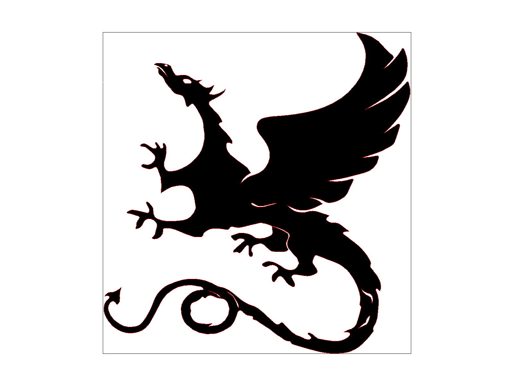

Overview
This homework explored the basic mechanism of graphics rasterization, transforms, and texture mapping by building a functional image parser that can render polygons with arbitrary shape and orientation, as well as map onto them custom textures/images.
The from-scratch implementation of rasterization really shows how the simple geometric logic of point sampling and line equation checks can be used to effincitly to render graphics on a grid of pixel. The most interesting takeaway from this homework is the internalization of graphics as simply a connected host of data structure of color values and coordinates, and how flexible that implementation is to operations like linear transformations and upgrades like supersampling to combat aliasing.
The biggest challenge of this project was to get used to C++ syntax and pointer logic again, but once that review is done, the implementation was quite straight-forward by simply following the mathematical frameworks introduced in lecture.
Section I: Rasterization
Part 1: Rasterizing single-color triangles
Triangles are rasterized by sampling a grid of points and testing each points using the line equation constructed from the triangles' vectices as described in lecture. If the sampled point is "above" all 3 edges of the triangle, that point is decidedly inside the triangle and can be filled with the triangle's color value.
To make sure our line equation tests are consistent, we need to establish a consistent winding order for the vertices. This is done by a quick line equation check before rasterization and reordering the vertices so that they are ordered in a clockwise direction.
Finally, to fill a pixel, one simply pass in the selcted fillcolor of the triangle into the framebuffer location associated with that pixel (as 3 float rgb values)
To make sure the line equation checks are efficient and to eliminate uncessary samples, for each triangle, only the pixels within its bonding box are sampled. That is the box bounded by (min_x(vertices), min_y(vertices)), (min_x(vertices), max_y(vertices)), (max_x(vertices), min_y(vertices)), (max_x(vertices), max_y(vertices)), which can be used to define the limits of the nested sampling loop.
Here is the screenshot of some test redering of svg files in the svg/basic folder with the pixel inspector centered on a the sharpest edges, showing signs of aliasing due to the fast changing signals.
|

|
|

|

|
Here is an example 2x2 gridlike structure using an HTML table. Each tr is a row and each td is a column in that row. You might find this useful for framing and showing your result images in an organized fashion.

|

|

|

|
Part 2: Antialiasing triangles
Part 3: Transforms
Section II: Sampling
Part 4: Barycentric coordinates
Part 5: "Pixel sampling" for texture mapping
Part 6: "Level sampling" with mipmaps for texture mapping
Section III: Art Competition
If you are not participating in the optional art competition, don't worry about this section!